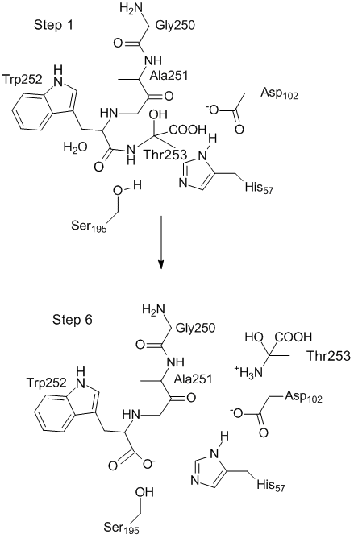

(Modeling proteins) (Chymotrypsin Mechanism: Step 1, Step 2, Step 3, Step 4, Step 5, Step 6)
|
 In the transition state, the proton from Ser195 is between the amine of Thr253 and His57; there is still a proton on Ser195, but this is from the water molecule. The oxygen atom of the water molecule forms part of the carboxylate on Trp252, and the second hydrogen of water is on the amine nitrogen of Thr253. Toggle display all Toggle center picture Fit to screen Interesting parts:
Toggle spin Toggle stereo |